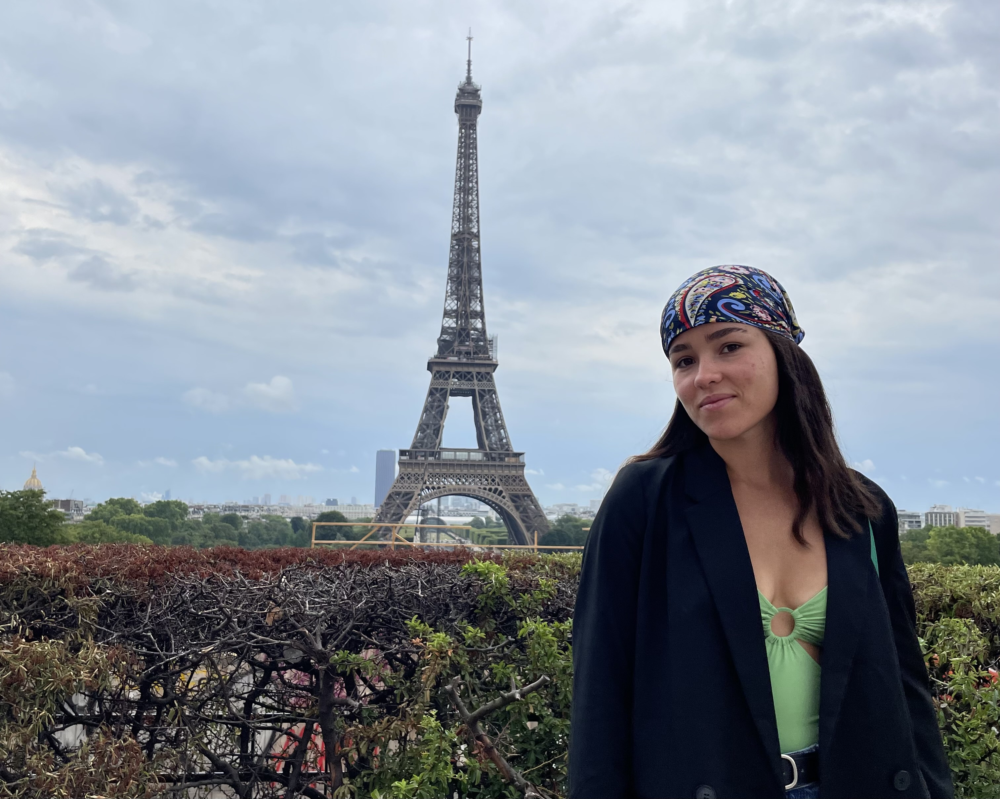
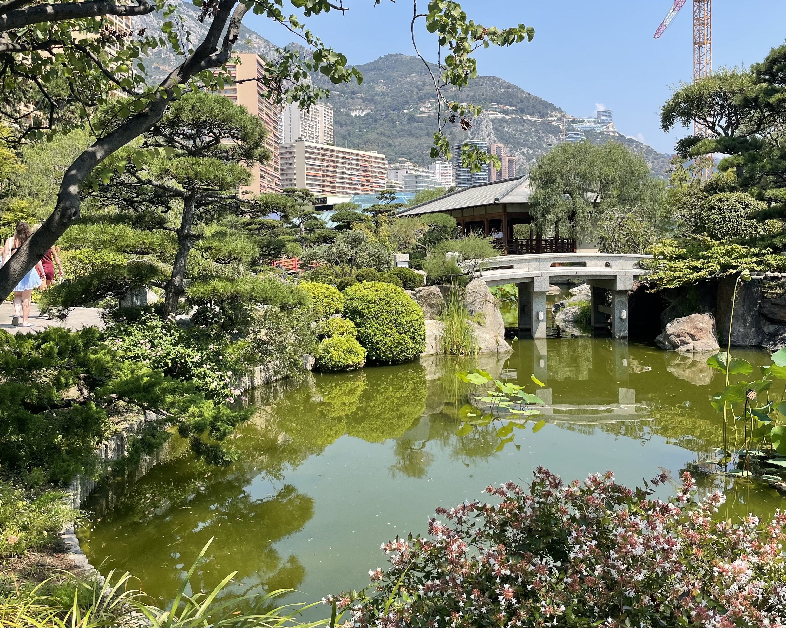

Destinos
América del Norte

Visité por primera vez los Estados Unidos en 2016, cuando mi mamá nos trajo a mi hermana y a mi
a conocer Miami y Orlando. Volví en 2018 con mi tía y conocí Nueva York, San Francisco y Los
Ángeles. Y en octubre de 2021 me mudé a Longmont, CO con una familia para ser su au pair. Luego
de eso tuve la oportunidad de visitar lugares que ya habia conocido, como Los Ángeles, Nueva
York y Miami, y conocer nuevos lugares, como Steamboat Springs, Florabama, Nueva Orleans, Grand
Lake, Keystone, Vail, Avalon, Zion, San Diego, el Gran Cañón, las afueras de la ciudad de Las
Vegas, Summit Lake y Colorado Springs. para ese entonces ya habia visitado 9 estados. A finales
de 2022 me mudé a San diego con otra familia para la que fui au pair. la cual me llevo a conocer
Hawaii, Palms Springs, St. Louis y Milwaukee, aunque tambien fuimos a Nueva York de vuelta. Y en
mis vacaciones y fines de semana pude conocer Nashville, Mississippi, la Isla Catalina, Yosemite
y Las Vegas, y re-visitar Miami (por vez solo Dios dabe cuanto), Los Angeles y Denver. Terminé
mi tiempo como au pair en octubre 2023 pero me quede en Estados Unidos viajando hasta marzo de
2024. Por el momento llevo un total de 14 estados conocidos (aeropuertos no cuentan!!!).

Luego de haber estado en Los Estados Unidos por casi 2 años, lejos de mi familia y amigos, la mamá de mis hermanos (Ceci) nos llevo a mi hermana, a mí, y a mis 2 hermanos (sus hijos) a conocer México. Fue una sorpresa para los 2 nenes y querian sorprenderme a mi llevando a mi hermana pero mi mamá y Ceci tienen pocas habilidades de decepción. Nos hospedamos en Costa Mujeres y de ahi visitamos Playa del Carmen e Isla Mujeres. Fue un viaje con unos paisajes deslumbrantes y pudimos conocer lugares hermosos.
En 2016, Desde Fort Lauderdale, mi hermana, mi mamá y yo nos tomamos un crucero hasta la isla Grand Bahama. El crucero fue una de las peores experiencias de mi vida. Una semana atras hubo una gran tormenta y el mar seguía agitado, por lo que el barco iba de costado y yo iba acostada en la cama o abrazada al hinodoro. cuando llegamos a las Bahamas nos bajamos del barco y pudimos recorrer una de las islas. La isla estaba devastada gracias a la tormenta y habia mucho viento pero la playa era pasmosa.
Europa

Luego de conocer Italia, fuí a Francia. Primero llegué a Niza en micro desde Florencia. Niza es una de las ciudades mas bellas del mundo. La vida nocturna era frenetica y de día tenía el ambiente de un pueblo. Luego fui a París. La verdad quedé decepcionada. Puede haber sido la ola de calor que me recibió con 40°C, las sucias calles o la inseguridad que no me permitió tomarme el transporte público de noche. Mas allá de eso, la ciudad es hermosa, los museos te sacan el aliento y es muy accesible (teniendo un celular con mapas en algun idioma que comprendas, porque todo el transporte público esta en francés).

Me tomé un dia de mi viaje en Niza para conocer Mónaco. Luego de un rápido translado en tren llegué a la terminal de Monte Carlo. De ahí me dirigí a la playa y caminé por las pintorescas calles. Pasé por el famoso casino y terminé en una de las playas artificiales. El agua era cristalina, y las rocas del piso quemaban al pisarlas. Tuve que comprarme unas ojotas para poder meterme al mar y refrescarme, ya que la ola de calor me perseguía por todos lados.

Llegué desde Estados Unidos al aeropuerto de Nápoles. De ahí hice mi camino al airbnb. Tomé un micro hsta Piano di Sorrento, donde entre en un bar y me amaron instantaneamente gracias a mi acento argentino, y luego otro que me dejó justo bajo el alojamiento. Desde mi habitación se podía ver toda la ciudad y quedaba al lado de la parada del micro que te llevaba a todos lados. Tomé el micro hacia el sur y conocí la Costa Amalfitana, donde cada curva presentaba un paisaje inexplicable. Visité Positano y Amalfi. Luego me tomé un tren hasta Nápoles y de ahí fui a Roma. Una de las ciudades mas bellas del mundo, que tiene todo, museos, historia, comida y gente amigable. Por último llegué a Florencia. Me hospedé en el centro y pude recorrer todo en 2 tardes. Quedé enamorada de esta ciudad, y cuando me estaba yendo hacia Niza descubrí que mis antepasados son de allí.
América del Sur
Además de haber nacido en Argentina, desde pequeña tengo el privilegio de recorrer el país y visitar lugares hermosos. He visitado la costa bonaerense durante el verano y pasado muchas tardes de uno en las playas de Mar del Tuyú y Mar Azul de pequeña, que luego cambiaron a noches y madrugadas en Pinamar en la adolescencia. También disfruto visitar la playa en invierno cuando una o dos camperas no son suficientes. Pude conocer el Glaciar Perito Moreno y el Calafate, Bariloche, Rosario, Gualeguaychú, Córdoba y Misiones.
Mi abuela me llevó a conocer el lado brasileño de las Cataratas del Iguazú y hospedarme de ese lado también. Además, cuando visite Uruguay conocí Chuí, una ciudad fronteriza donde Uruguay y Brasil se dividen por una calle y no hay frontera.
Un verano me fui con mi familia de roadtrip por Uruguay. Arrancamos desde La Plata y subimos por Argentina hasta la frontera con Uruguay. Luego de cruzar la frontera nos dirigimos hacia el sur de vuelta y por 10 días estuvimos recorriendo muchas playas de la costa. Una más linda que la otra, pero la que más me sorprendió fue Cabo Polonio, un parque nacional al cual solo se puede entrar comprando un ticket y tomando un translado hasta el pueblo. El agua era cristalina y al entrar los peces nadaban al lado tuyo.